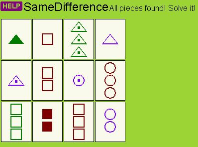
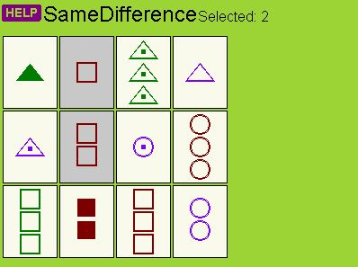
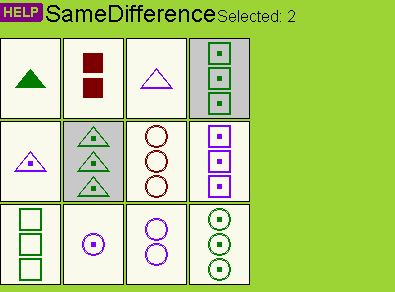
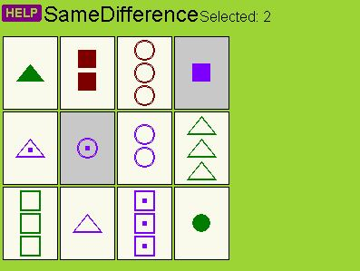
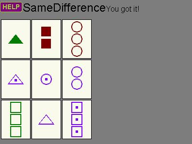

|  |
- Each round, you will find find one set of 3 cards.
- Each of the cards must be either all the same or all different with regard to four characteristics: color, number, shading, and shape.
- There will always be a set to find.
- There may be more than one set in the cards you see, but you only identify one set each level.
- When you have found all the cards in the maze, the puzzle will light up to be solved.
|
|  |
- In this example, here's how it breaks down:
- Color: all three in this set will be the same color (red).
- Number: all three will be different numbers (one, two, and three).
- Shading: all three will be the same shading (empty).
- Shape: all three will be the same shape (square).
|
|  |
- In this example, here's how it breaks down:
- Color: all three in this set will be the same color (green).
- Number: all three will be the same number (three).
- Shading: all three will be the same shading (dot in the middle).
- Shape: all three will be different shapes (square, circle, and triangle).
|
|  |
- In this example, here's how it breaks down:
- Color: all three in this set will be the same color (purple).
- Number: all three will be the same number (one).
- Shading: all three will be different shading (solid, dot in the middle, empty).
- Shape: all three will be different shapes (square, circle, and triangle).
|
|  |
- When you click on the third card and complete the set, the set will disappear.
- Once solved, the puzzle will darken until the next round.
|